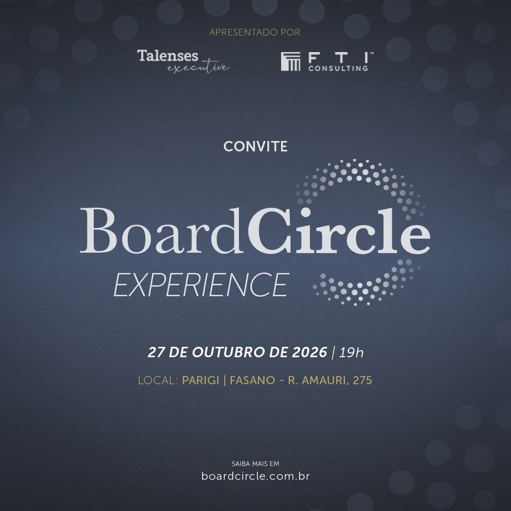
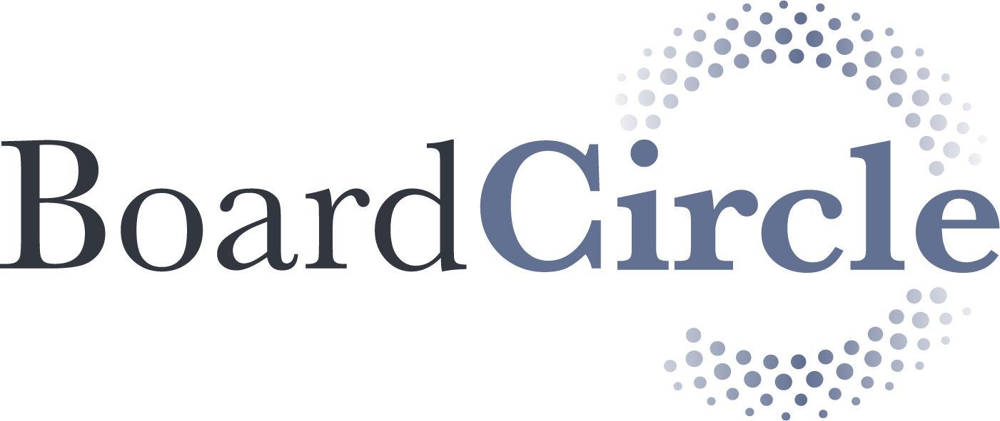
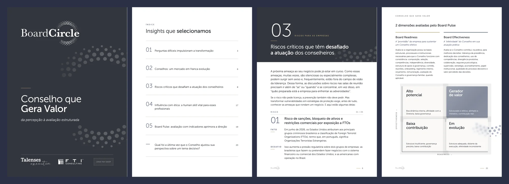
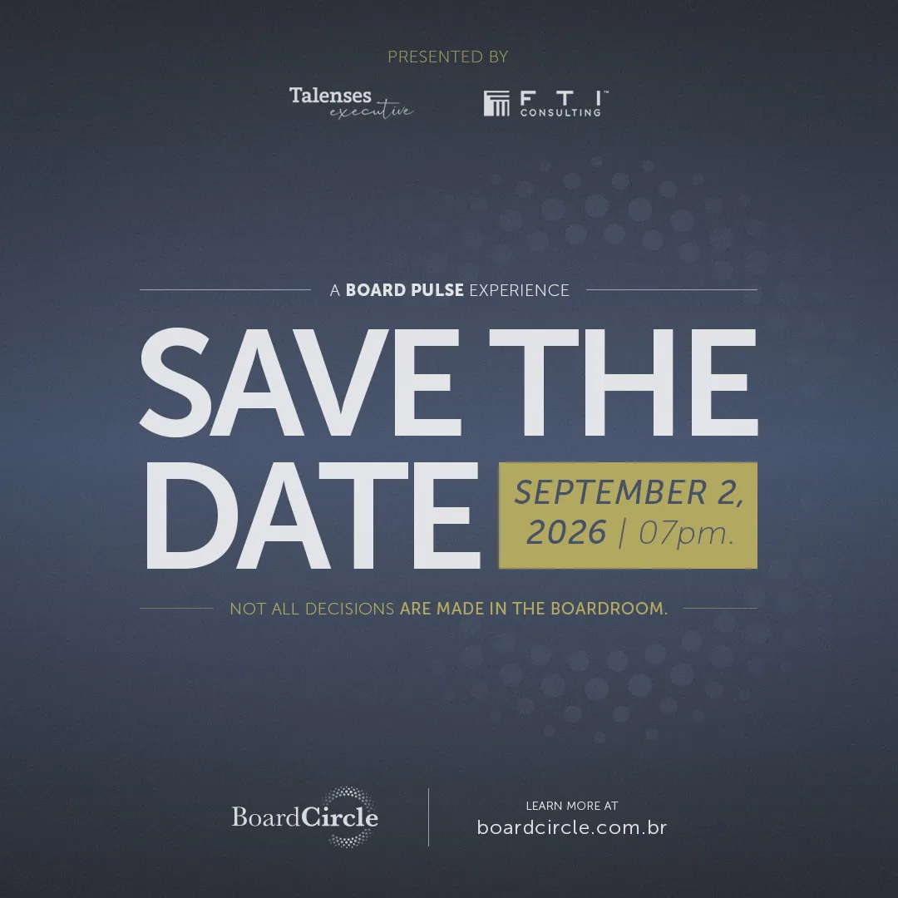
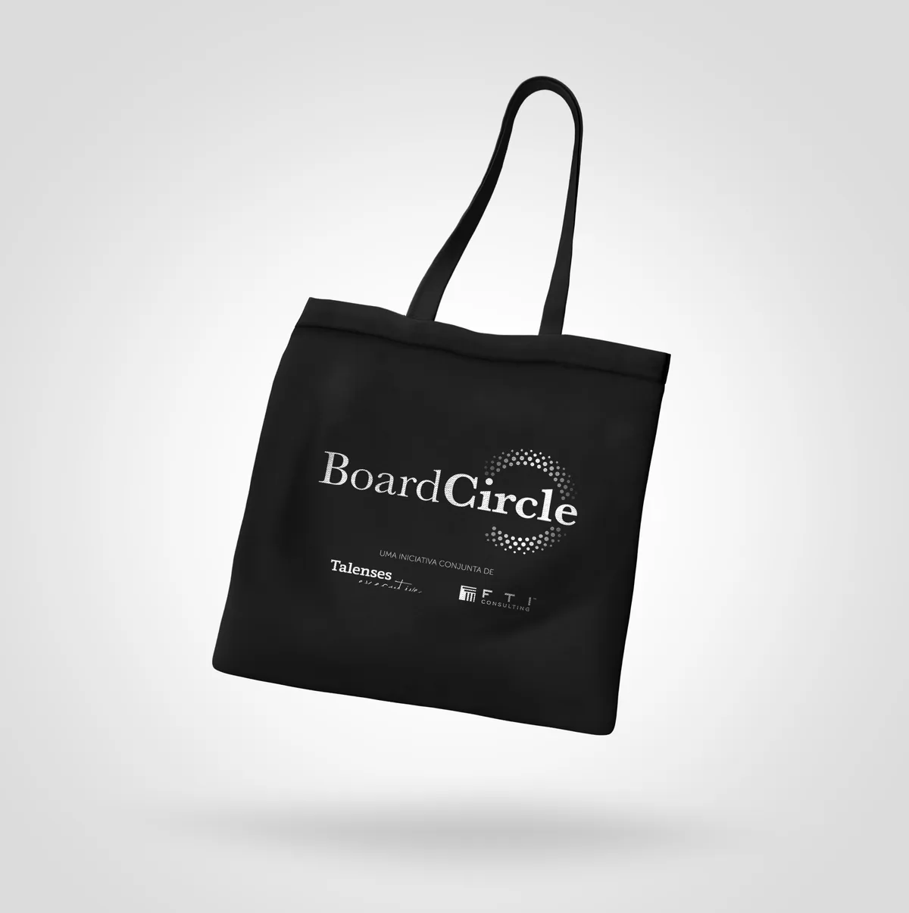
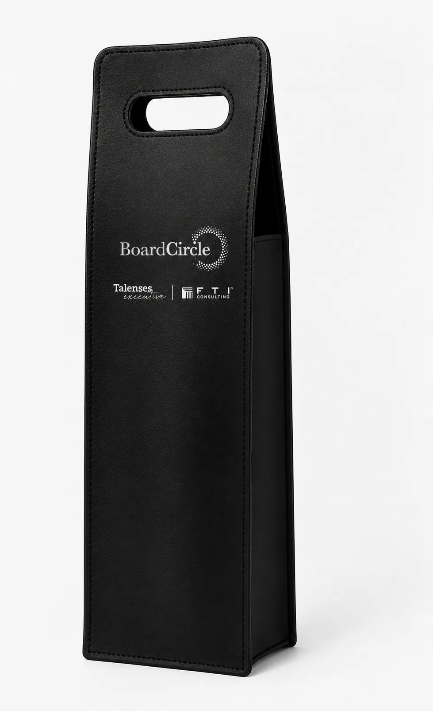
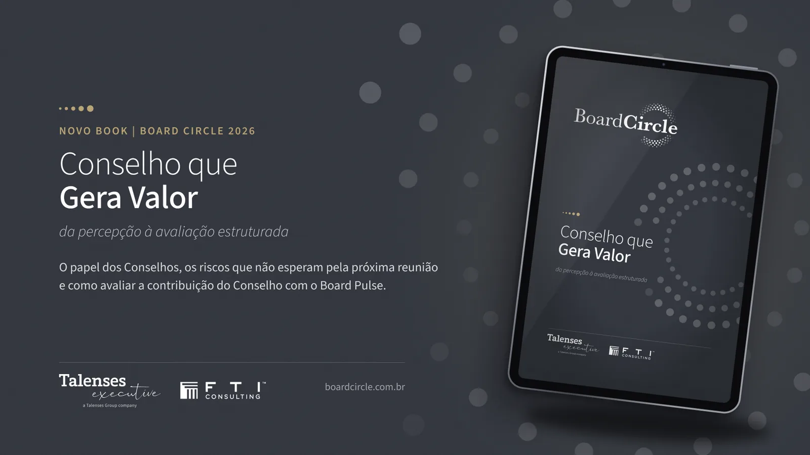
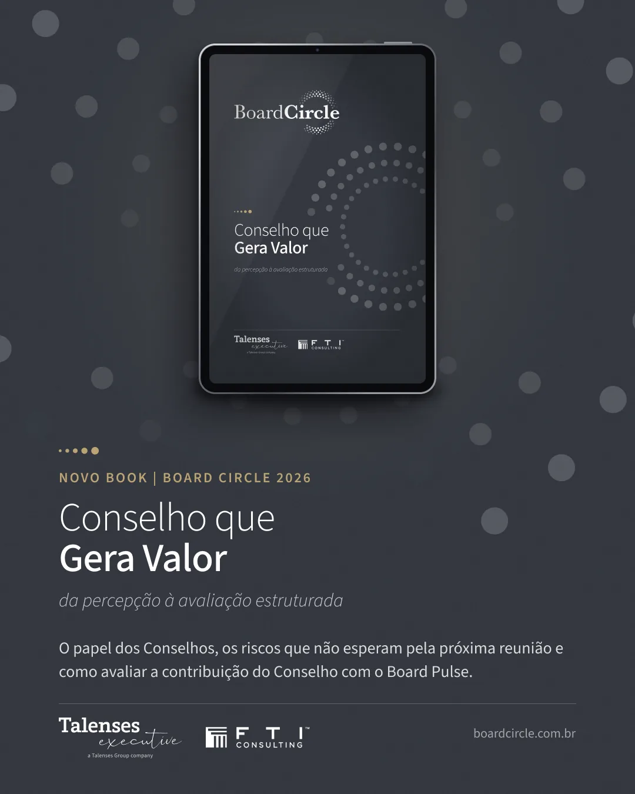

Talenses Executive × FTI Consulting · 2026
Board Circle
Full visual identity for Board Circle, a governance and boards initiative. I created the brand and rolled it out to the book “Conselho que Gera Valor”, save the date, invitation, launch event stationery and the screen loop.

The challenge
Talenses Executive and FTI Consulting wanted to launch an initiative for board members and senior executives. The brand had to carry the sobriety of a boardroom without feeling cold or bureaucratic.
Beyond the brand, the job included a content book and every piece for the launch event on 27 October 2026, all on print deadlines.
The process
The brand pairs a classic serif with a symbol of dots forming a circle. The palette sits in graphite blue with gold accents, and the same dot pattern becomes a graphic device across every piece.

The book “Conselho que Gera Valor” has 24 pages and went through 21 versions up to the final press proof. I built an editorial system with numbered chapters, dark openers, data highlights and pull quotes.

For the event, the identity went into the invitation (five versions), the save the date, the tote bag and the gift olive oil holder, plus the animated screen loop.



The outcome
The brand debuted at the launch event with one visual language from invitation to big screen, and the book lives on as a relationship piece for board members.
- 21book versions up to print
- 24pages of content
- 5invitation versions
- 27/10launch event

